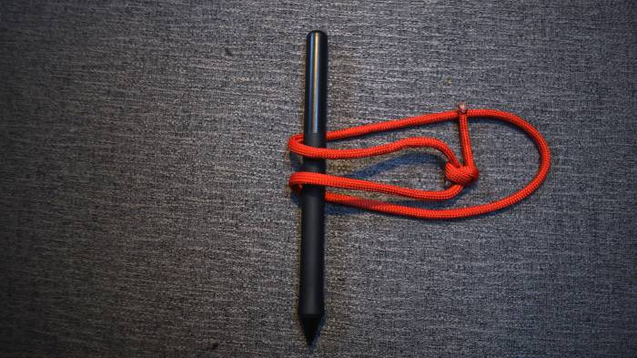
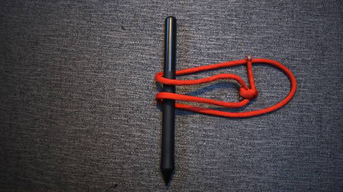
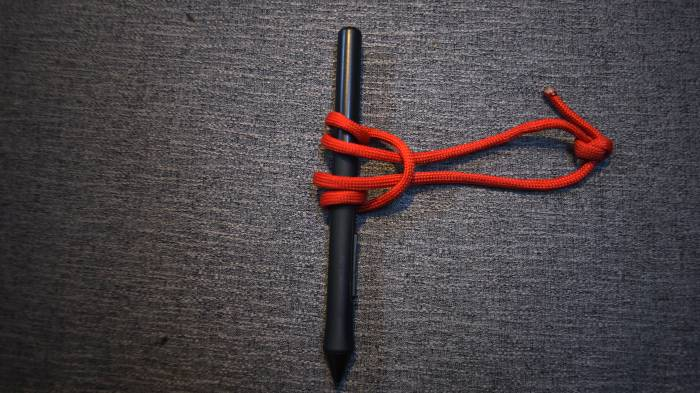
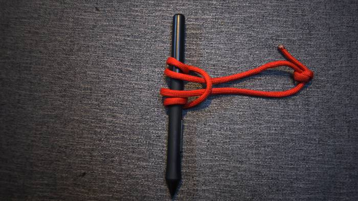

About
About Collection
CollectionA useful slip-and-grip friction type hitch, which pulls tight when the load is applied and slides easily for re-placement when there is no load. It doesn't damage the rope it is tied to, and works well for ropes of different diameters.
The loop used to make this knot is terminated by a double fisherman's knot.
Note that the inventor of this knot, commonly referred to as a Prusik knot, was a lieutenant in the Nazi German Wehrmacht (I really had no idea until someone told me). It is unfortunate that this knot bears his last name.
 


 

Make another pass...